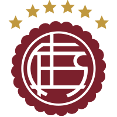

CLUB ATLÉTICO LANÚS
Fundado el 3 de enero de 1915.
Tel. : 4357-9200. Gerencia: Tel. y Fax 4225-0056 Prensa: 4240-6301 Fútbol Amateur: 4240-5633
Estadio y cancha auxiliar: Gral. J.I.Arias y Héctor Guidi - (1824) Lanús (Bs.As.)
E-mail: secretaria@clublanus.com
Presidente: Sr. Luis María Chebel